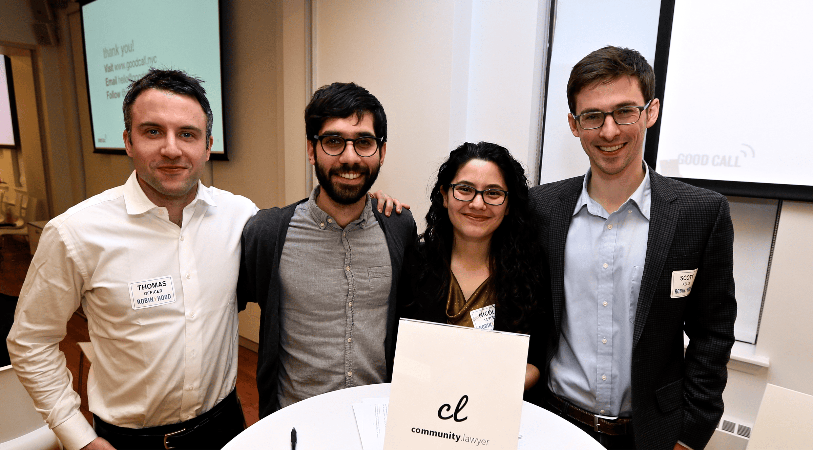
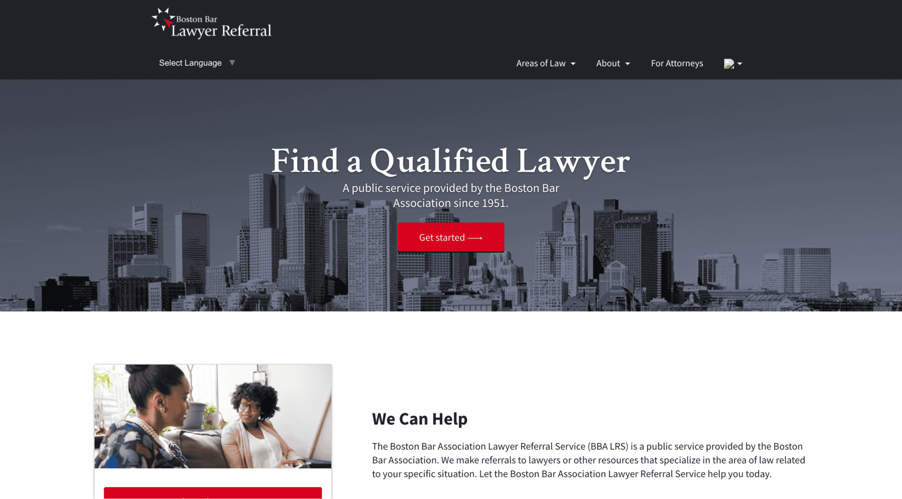

Thomas’ Portfolio
Blue Ridge Labs @ Robin Hood
Role of Design Fellow, back in 2016,
researching and cofounding
a lawyer marketplace
Role of Design Fellow, back in 2016,
researching and cofounding
a lawyer marketplace
Think the world doesn't need another selfie app?
We agree.
BRL 2016 Promotional Website
I stumbled upon Blue Ridge Labs with only 24 hours remaining before their Fellowship deadline closed. The Fellowship is a 5 month program to help entrepreneurs find cofounders, build prototypes, and raise money. The purpose is to create new ventures that tackle the target challenge of the year. In 2016, the target challenge was the justice gap: the staggering difference between the need for, and the availability of, affordable legal services.
What is it like to spend 5 months with talented strangers, surrounded by whiteboards, bashing your head against a problem? That deserves its own blog post. For now, let me say that it was chaos. Beautiful, exciting, frustrating, and ultimately productive chaos.
My cofounders and I focused on the problem of finding an affordable lawyer once you've discovered that you're "over income" and therefore don't qualify for legal aid. We called it Community.lawyer.
community.lawyer team 2016
problem statement
v1 marketing materials
homepage draft
Community.lawyer was a two-sided marketplace, with clients on one side and lawyers on the other. Where would we get our roster of lawyers? What hack could we exploit to get a large roster of vetted lawyers with as little effort as possible?
Our first pivot was moving away from trying to build our own roster of lawyers towards partnering with those organizations that already had them: bar associations.
Bar associations have lawyer referral services that traditionally operate by phone. Their online experience was outdated. We offered Community.lawyer as referral platform SaaS.
boston bar's community.lawyer website
v2 marketing materials
lawyer-facing backend
admin-facing backend
We grew very quickly to include as customers some of the largest bar associations in the country. Our network of referral platforms still exists today and is used by over 20,000 people every month to find legal help.